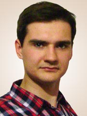

{kind=link}
Vladislav Chuprin
Faculty of computer science and technology
The department of applied mathematics and informatics
Speciality «Software engendering»
Improving the efficiency of the implementation of distributed computing within MapReduce software framework Hadoop
Scientific adviser: D.T.S, Professor Olga Dmitrieva
| Details | |
| Full name: | Chuprin Vladislav Igorevich |
| Date of birth: | 01.07.1992 y. |
| Place of birth: | Makeevka, Donetsk region |
|
Education |
|
| Schools: |
|
| UNIVERSITY: |
|
| Average rate: | 4,7 |
| Additional courses: | 10.2010-12.2010 – «Java Fundamental» «Sun Academic Initiative» coerces of Sun Microsystems. |
|
Languages |
|
| English: | Intermediate level |
| Russian, Ukrainian | Native speaker |
|
Профессиональные навыки |
|
| Operating Systems: | Linux (Debian 6.0/7.0, Open SUSE, ARHEL), Windows Server (2003/2008) |
| Programming languages: | Java, Scala, JavaScript, PHP, C/C++ |
| Development environment: | IntelliJ IDEA, Eclipse, Netbeans |
| Experience: | |
|
Personal |
|
| Personal achievements: | 3 sport rank of long-distance running |
| Hobbies: | New technologies, cycling, rafting, hiking |
| Personal qualities: | Focused, analytical mind |
| Future plans: | Continuous self-improvement |
|
Contacts |
|
| e-mail: | chuprin.vladislav@gmail.com |
| skype: | vladislav.chuprin |
| web-site: | www.chuprin.pp.ua |